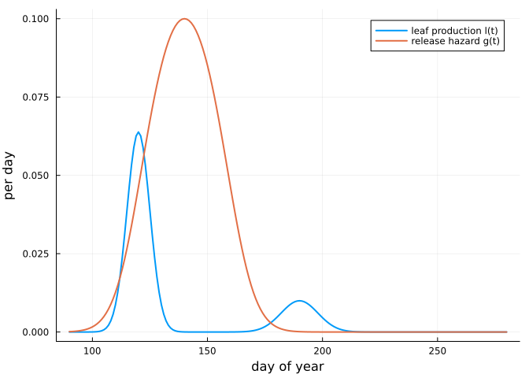
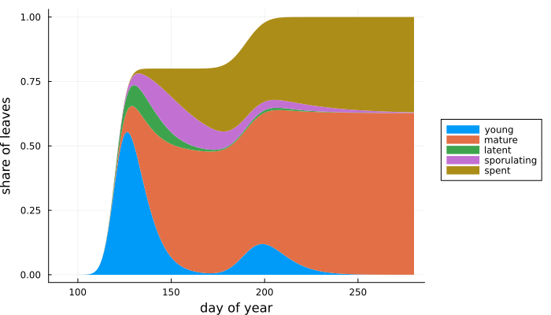
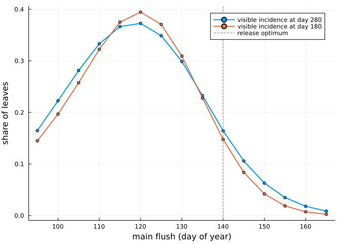
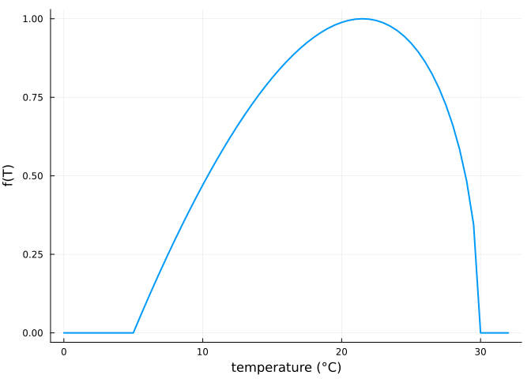
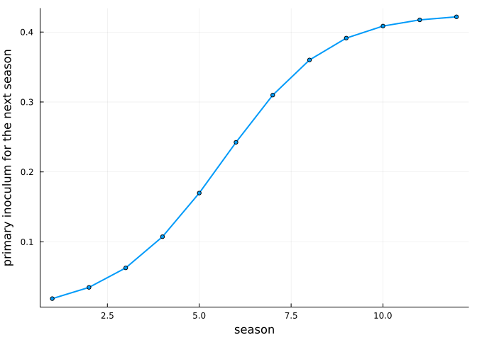

The leaf-level model: timing and severity
Simon Frost
- Overview
- Setup
- The model
- Its parts
- Nesting Hamelin et al. (2016)
- Timing sets severity
- Weather
- Between seasons
Overview
Oak powdery mildew infects only young leaves: a leaf becomes resistant within a few weeks of unfolding. Whether a season is severe therefore depends on timing, on how well the flushing of the oaks matches the release of the primary inoculum, ascospores from the chasmothecia that overwintered on the bark and in the litter. Marçais, Kavkova and Desprez-Loustau (2009) measured that release, and found it peaks in May. Oaks that flush late, or a second flush in summer (lammas shoots), meet the epidemic with fresh susceptible leaves.
The leaf-level model follows leaves from emergence. It keeps the within-season secondary spread of the model of Hamelin et al. (2016), adds leaf phenology, ageing, a latent period, a timed primary release and weather, and carries inoculum over the winter. This vignette shows each part, checks that the model reduces to Hamelin’s, and then asks how the timing of flushing sets severity. All parameter values here are illustrative, not fitted.
Setup
using PowderyMildew
using Plots
using PrintfThe model
For one stand, with all quantities shares of the stand’s full leaf complement and t the day of the year:
- young susceptible leaves U₁ … UK emerge at the rate l(t) and age through K stages with mean susceptible time τs, then become mature leaves M with relative susceptibility ε;
- an infected leaf is latent (E₁ … EL, mean latent period
latent), then sporulates (I), and stops sporulating at rate γI but stays diseased (Z); - primary inoculum C is released at the hazard g(t);
- the force of infection is λ = f(t) (bc I + ba g(t) C + b_ext), with f(t) the weather.
\[\begin{aligned} U_1' &= l(t) - (\lambda + K/\tau_s) U_1, \qquad U_k' = (K/\tau_s)(U_{k-1} - U_k) - \lambda U_k, \\ M' &= (K/\tau_s) U_K - \varepsilon \lambda M, \qquad C' = -g(t) C, \\ E_1' &= \lambda \Big(\sum_k U_k + \varepsilon M\Big) - (L/\text{latent}) E_1, \quad \dots, \quad I' = (L/\text{latent}) E_L - \gamma_I I, \qquad Z' = \gamma_I I. \end{aligned}\]
Next year’s primary inoculum is C = c_w ∫ η(t) I(t) dt, with η(t) weighting the late-season sporulation that forms chasmothecia.
Its parts
Leaf production is a sum of flushes with normally distributed dates, which stand for the spread of flushing between trees. Here a main flush on day 120 holds 80 % of the leaves and a lammas flush on day 190 the rest. The release hazard is the logit-quadratic in the day of the year of Marçais et al. (2009), with its optimum on day 140.
production = FlushProduction([120, 190], [5, 8], [0.8, 0.2])
release = ReleaseHazard(; rate = 0.2, optimum = 140, curvature = -0.003)
days = 90:1:280
plot(days, production.(days); lw = 2, label = "leaf production l(t)", xlabel = "day of year",
ylabel = "per day")
plot!(days, release.(days); lw = 2, label = "release hazard g(t)")
The parameters: secondary transmission b_c = 0.25 per day, leaves susceptible for 20 days on average (K = 3), mature leaves 5 % as susceptible, an 8-day latent period (L = 3), sporulation lasting 20 days on average, and chasmothecia formed from sporulation after day 240.
p = MildewParameters(; b_c = 0.25, b_a = 0.5, tau_s = 20, K = 3, epsilon = 0.05, latent = 8, L = 3,
gamma_I = 0.05, c_w = 2.0)
season(date; weather = t -> 1.0) =
SeasonForcing(; tspan = (90, 280), production = FlushProduction([date, date + 70], [5, 8], [0.8, 0.2]),
release, weather, gate = t -> t > 240 ? 1.0 : 0.0, tstops = [240.0])
sol = solve(MildewProblem(p, season(120), 1.0))
# state layout with K = 3 and L = 3: [U₁ U₂ U₃ M E₁ E₂ E₃ I Z C W]
parts(t) = (u = sol(1, t); (sum(u[1:3]), u[4], sum(u[5:7]), u[8], u[9]))
P = reduce(hcat, [collect(parts(t)) for t in days])'
areaplot(days, P; label = ["young" "mature" "latent" "sporulating" "spent"], xlabel = "day of year",
ylabel = "share of leaves", lw = 0, legend = :outerright, size = (700, 400))
Most infections arise on the young leaves of the main flush in May and June. Leaves that escape mature and stay largely clean; the lammas flush in July gives the epidemic a second crop.
Nesting Hamelin et al. (2016)
With every leaf present at the start, no ageing, no latency, all primary inoculum released at once and the inoculum carried over from the sporulating leaves at the end of the season, the model is the one-species model of Hamelin et al., with β = bc, α = γI and χ = ba cw.
β, α, χ, I0, τ = 0.2, 0.03, 1.5, 1e-3, 150.0
hamelin = solve(HamelinProblem(HamelinParameters(; beta = [β], chi = [χ], alpha = α, season_length = τ), [I0];
seasons = 3))
b_a = 0.7
q = MildewParameters(; b_c = β, b_a, gamma_I = α, c_w = χ / b_a)
nested = solve(MildewProblem(q, fill(SeasonForcing(; tspan = (0.0, τ), leaves0 = 1.0, pulse = true), 3),
-log1p(-I0) / b_a))
# with K = 1 and L = 0 the state is [U M I Z C W]
gap = maximum(maximum(abs.([u[1] + u[2], u[3], u[4]] .- hamelin(s, t)))
for s in 1:3 for t in 0:5:τ for u in (nested(s, t),))
@printf("largest difference over three seasons: %.1e\n", gap)largest difference over three seasons: 2.2e-11Timing sets severity
The synchrony question: how does severity depend on when the oaks flush, relative to the release of ascospores? Shifting the main flush (and the lammas flush with it) from day 95 to day 165, with the same primary inoculum:
dates = 95:5:165
runs = [solve(MildewProblem(p, season(d), 1.0)) for d in dates]
plot(dates, [visible_incidence(s, 1, 280.0) for s in runs]; lw = 2, marker = :circle, ms = 3,
label = "visible incidence at day 280", xlabel = "main flush (day of year)", ylabel = "share of leaves")
plot!(dates, [visible_incidence(s, 1, 180.0) for s in runs]; lw = 2, marker = :circle, ms = 3,
label = "visible incidence at day 180")
vline!([140]; color = :gray, ls = :dash, label = "release optimum")
Severity peaks for flushing about three weeks before the release optimum, when young leaves are present while most ascospores are released and the epidemic still has the summer ahead. Early-flushing stands have mature, resistant leaves by the time release peaks; late-flushing stands escape the primary inoculum and leave the secondary epidemic too little time. This is the mechanism that the data of Barrès et al. (2024) and Dantec et al. (2015) can test.
Weather
The force of infection scales with a temperature response f(T) between 0 and 1, by default the beta function fitted to the germination of E. alphitoides conidia (optimum 21.5 °C, none above 30 °C). Seasons whose temperatures follow a smooth annual cycle around different means:
temperature(mean) = t -> mean + 7cos(2π * (t - 200) / 365)
plot(0:0.5:32, beta_response.(0:0.5:32); lw = 2, label = nothing, xlabel = "temperature (°C)",
ylabel = "f(T)")
for mean in (11, 13, 15, 17)
s = solve(MildewProblem(p, season(120; weather = t -> beta_response(temperature(mean)(t))), 1.0))
@printf("annual mean %2d °C (summer peak %2d °C): visible incidence at day 280 = %.3f\n",
mean, mean + 7, visible_incidence(s, 1, 280.0))
endannual mean 11 °C (summer peak 18 °C): visible incidence at day 280 = 0.261
annual mean 13 °C (summer peak 20 °C): visible incidence at day 280 = 0.310
annual mean 15 °C (summer peak 22 °C): visible incidence at day 280 = 0.344
annual mean 17 °C (summer peak 24 °C): visible incidence at day 280 = 0.362Warmer seasons are more severe here because temperatures stay below the optimum. In practice, warming also shifts budburst earlier, so its net effect depends on how flushing and release move together; the package takes both as inputs.
Between seasons
Chasmothecia carry the inoculum to the next year. Starting from a little inoculum, the winter map settles towards an endemic level:
multi = solve(MildewProblem(p, fill(season(120), 12), 0.01))
w = winter_inoculum(multi)
plot(1:12, w; lw = 2, marker = :circle, ms = 3, label = nothing, xlabel = "season",
ylabel = "primary inoculum for the next season")
@printf("growth in the first year: ×%.2f; visible incidence at day 280 in season 12: %.3f\n",
w[1] / 0.01, visible_incidence(multi, 12, 280.0))growth in the first year: ×1.89; visible incidence at day 280 in season 12: 0.211A low inoculum grows from one year to the next when the winter map’s slope at zero exceeds one. That condition decides whether the disease can establish where it arrives, and so, with the dispersal of conidia, how fast it spreads: the subject of the next vignette.